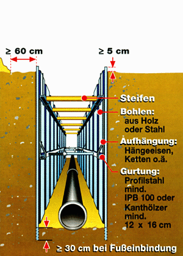

Was ist beim senkrechten Verbau zu beachten?
Beim senkrechten Verbau sind spezielle sicherheitstechnische Anforderungen zu beachten sowie folgende Bemessungsgrößen:


Beim senkrechten Verbau sind spezielle sicherheitstechnische Anforderungen zu beachten sowie folgende Bemessungsgrößen: